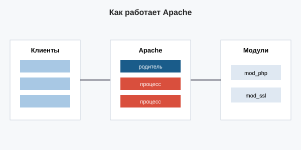

Apache HTTP Server
Apache — один из самых старых веб-серверов, выпущен в 1995 году. Его развивает сообщество Apache Software Foundation. Название связывают с фразой «a patchy server» (сервер из заплаток).
Модульная архитектура
Весь функционал Apache собирается из модулей. Их можно подключать и отключать. Благодаря этому сервер очень гибкий: любую задачу решает отдельный модуль.

Известные модули
mod_ssl— поддержка HTTPS;mod_rewrite— переписывание URL;mod_proxy— проксирование;mod_php— встроенный PHP;mod_deflate— сжатие gzip.
Режимы работы (MPM)
Apache умеет работать по-разному. Режим (MPM) выбирается в конфиге и влияет на производительность.
| Режим | Как работает | Когда использовать |
|---|---|---|
| prefork | 1 процесс на соединение | Старые модули, простые сайты |
| worker | Процессы + потоки | Смешанная нагрузка |
| event | Потоки + асинхронный keep-alive | Современные нагруженные сайты |
Файлы .htaccess
Особенность Apache — можно менять настройки прямо в каталоге сайта
через файл .htaccess, без правки главного конфига.
# Включить ЧПУ
RewriteEngine On
RewriteCond %{REQUEST_FILENAME} !-f
RewriteCond %{REQUEST_FILENAME} !-d
RewriteRule ^(.*)$ index.php [L,QSA]
# Запретить доступ к .git
<FilesMatch "^\.git">
Require all denied
</FilesMatch>
Важно: Apache проверяет
.htaccess
при каждом запросе — это замедляет работу. На больших проектах
настройки переносят в главный конфиг.